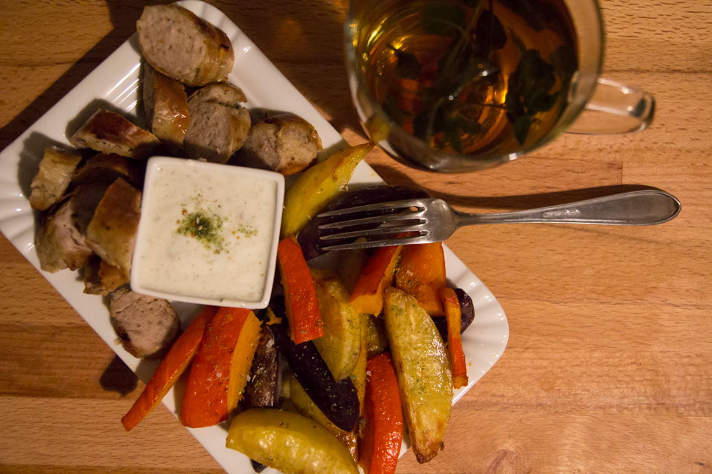

Ich bin Mandy. Esse für mein Leben gerne und interessiere und engariere mich für regionale Lebensmittel.
Wenn man so will, dreht sich nahezu alles in meinem Leben ums Essen und essen beschaffen.
Einer dieser Tage - Herbst!

Allesamt regional und saisonal
Dienstag, bis 17 Uhr in der Uni. Und ich hab Hunger.
Extra einkaufen will ich nicht und möglichst wenig Arbeit sollte es sein. Kartoffeln und Hokkaidokürbis hab ich noch da und Jogurt - ach und im Gefrierschrank noch Bratwurst.
Bratkartoffeln sind sehr fettig und die Pfanne ist so kaputt, dass das knusprige eh alles drin kleben bleibt. Also wird wieder der Ofen angeschmissen. Kartoffel-, Kürbisspalten und Bratwurst aus dem Ofen, dazu ein Jogurtdip. Das klingt gut.
Ein Rezept hab ich nicht - wie sooft einfach frei nach Schnauze.
Kartoffeln schälen, in Spalten schneiden
Kürbis gut abbürsten ausnehmen und ebenfalls in Spalten schneiden
Zum würzen kommt mir Knoblauch in den Sinn, dann fallen mir die Chilis auf, die auch mit in den Mörser wandern
Öl, Salz Pfeffer und Rosmarin, alles klein mörsern und das Gemüse damit einreiben, natürlich mit den Händen. Das macht sich am besten.
Ofen an, Bleche rein, Bratwurst dazu und abwarten.
20-30 Minuten, mein Ofen kann nur Unter-Oberhitze, und jetzt sollten die Spalten so langsam braun werden.
Zum Thema knusprig hab ich gelesen, dass Einritzen mit einer Gabel die Oberfläche größer machen und dadurch die Kartoffelspalten knusprig machen soll. Da ich Kartoffeln so oder so liebe ist es mir nicht wichtig, dass sie knusprig sind, deswegen stecke ich auch keine enorme Mühe in das Präparieren und Versuchen.
Mein Ergebnis sind goldbraune, bissfeste aber labberige Kartoffelspalten - Yummy!
Für den Dip habe ich getrocknete Gemüsebrühe und Jogurt zusammengemischt und mit etwas Salz "abgeschmeckt".
Alles angerichtet und fertig ist das Abendessen.
Als Info dazu: mein Gemüse holen ich direkt vom Bauern. Das schmeckt einfach besser und ich weiß was "drin steckt". In Spandau gibt es SpeiseGut. Der Betrieb funktioniert nach dem Prinzip der solidarischen Landwirtschaft, Mitglieder zahlen einen monatlichen Beitrag und finanzieren somit das Bestehen des Betriebes. Dafür erhalten sie direkten Einblick in das Geschehen und bekommen wöchentlich eine Kiste mit saisonalem Gemüse direkt vom Acker. Auch hier an der HTW befindet sich ein Depot.
Ich selber kaufe aber nur im Regionalladen, weil eine Mitgliedschaft für mich einfach zu teuer ist.
Heute stand seit einer Weile mal wieder Fleisch auf dem Plan. Das so unbekannte und geliebte Metzerstück hat sich in unseren Tiefkühlschrank verkrochen. Das Metzgerstück ist ein Filet-ähnliches Stück Fleisch, welches sehr klein und unter Liebhabern beliebt ist.
Der Name entstand, weil sich früher die Metzger genau dieses Stück selber behalten haben. Das Metzgerstück stammt aus der Schulter
des Rindes und ist zart und kräftig im Geschmack.
Weil ich selten Fleisch esse und wenn dann sehr bewusst, kaufe ich es auch bei dem Bauern im die Ecke. Rindfleisch kaufe ich immer
bei "Schwarze Kuh" - ein kleiner Familienbetrieb der wenig Rinder am Rand von Berlin hält. 365 Tage im Jahr draußen auf der Weide.
Jeden Monat wird ein Tier geschlachtet und nach dem Konzept Nose-to-Tail komplett verkauft/verarbeitet.
Das Fleisch hat ein starken Eigengeschmack, was ich so an qualitativem Fleisch liebe - es schmeckt nach was. Deswegen gibt es keine Soße.
Aber Gemüse der Saison: Kartoffelbrei mit einem Ragout aus Stangen- und Staudensellerie, gelben und orangenen Rodelika Karotten und Zwiebel.
Es ist jedes Mal ein kleines Fest das Essen zuzubereiten und dann genüsslich und in aller Ruhe schmecken zu lassen. Wie sooft geschieht nichts nach Rezept. Das Fleishc wird am Morgen aus dem Tiefkühler genommen und im Kühlschrank aufgetaut. Das Gemüse kaufen wir ein Mal die Woche und verarbeiten immer nur nach Lust und Laune. Diesmal waren eben diese Reste noch im Kühlschrank. Sellerie waschen, schneiden, Karotten werden nicht geschält, sondern nur abgebürstet, ist ja schließlich alles ohne Pestiziede und Fungiziede angebaut. Das Gemüse wird lediglich mit Mist am Anfang der Saison gedüngt. Da landet zwar mal das ein oder andere kleine Lebewesen in der Küche, aber so merkt man, dass nicht nur wir Menschen auf dieses "geile" Gemüse stehen.
Lust auf Regionale Lebensmittel und dazu auch den Bauern persönlich kennenlernen?
Marktschwärmer
Teile den Eintrag mit deinen Freunden:
Burger-Time
Und da ist er wieder, der Tag, an dem man alles für einen richtig guten Burger geben würde. Ich erinnere mich an ein Rezept, dass ich vor ner ganzen Weile mal "entwickelt" habe. Und zwar geht es darum, einen Burer komplett selber zu machen, vom Bun bis zum Patty. Scheint 'ne schwierige Angelegenheit zu sein - aber die Arbeit hat sich gelohnt und lohnt sich immer wieder. Selbstgemacht schmeckt eben doch ganz anders - zu mal man jede Komponente so abwandeln kann wie man grad will und vor allem, was man grad zu Hause hat.
Für den Bun ist es im Prinzip ganz einfach: die Zutaten zusammenmischen und den Teig gehen lassen - Im Prinzip steht im Rezept ganz genau alles drin.
Hier kommt ihr zum Rezept auf chefkoch.de
Ich habe schon sooft in meinem Leben nach Rezept gekocht und gebacken und sooft weiche ich immer von den ursprünglichen Rezepten ab. Vielleicht ist es die Lust, etwas Neues auszuprobieren oder einfach die Einstellung, sich dem Gewohnten zu wiedersetzen - aber es macht Spaß. Und wenn es irgendwann mal nicht schmeckt, dann ist es eben so. Also ruhig mal ein bisschen rumprobieren. Wie wär's z.B. mich Chili oder Zimt für die Soße, um dieser ein bisschen mehr Pepp zu verleihen. Ich finde ja, in der Küche sind keinerlei Grenzen gesetzt - So lange man im Nachinein wieder aufräumt.
Also nie Angst davor haben, mal selber etwas zu kochen. Es ist nicht schwer aber erfordert vielleicht manchmal etwas Übung - aber der Spaß bleibt sicher nicht aus.